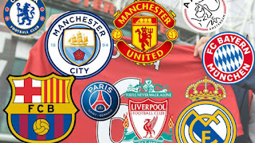

In voetbal zijn er veel verschillende clubs uit verschillende landen. Elk land heeft zijn eigen competitie van meestal 20 teams. Maar welke grote clubs zijn er? Hier wordt over de grootste clubs ter wereld verteld.
- Real Madrid - Spanje - 13 UCL
- FC Barcelona - Spanje - 5 UCL
- Manchester United - Engeland - 3 UCL
- Bayern Munchen - Duitsland - 6 UCL
- Liverpool - Engeland - 7 UCL 
- AC Milan - Italie - 7 UCL
- Juventus - Italie - 2 UCL
- Arsenal - Engeland - 0 UCL
- Inter Milan - Italie - 1 UCL
- Chelsea - Engeland - 2 UCL
Dit zijn 10 van de beste clubs allertijden.
Deze clubs zijn internationaal en domestisch de meest succescvolle clubs in de wereld.